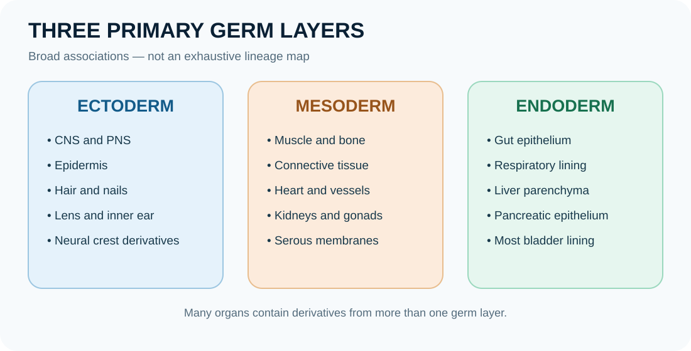

Embryology: fertilisation, implantation and the first weeks

Embryology studies how a new organism develops from fertilisation through embryonic and fetal periods. Human development is continuous, and the first weeks involve rapid cell division, lineage specification, implantation and establishment of the body axes. Dates are commonly given as post-fertilisation age or gestational age counted from the last menstrual period; these differ by approximately two weeks in a typical cycle.
Learning objectives
- Sequence fertilisation, cleavage, morula formation, blastocyst formation and implantation.
- Distinguish the trophoblast from the embryoblast and explain the bilaminar and trilaminar embryonic discs.
- Relate gastrulation, neurulation and embryonic folding to the emerging body plan.
- Explain why developmental timing matters when considering congenital anomalies.
High-yield study points
- Fertilisation usually occurs in the uterine tube and produces a zygote; cleavage divisions create blastomeres without a large increase in overall conceptus size.
- The morula develops into a blastocyst with an outer trophoblast, an inner cell mass and a fluid-filled cavity.
- Implantation begins around the end of the first week after fertilisation; trophoblast contributes to fetal components of the placenta.
- The bilaminar embryonic disc includes epiblast and hypoblast; during gastrulation, epiblast cells form ectoderm, mesoderm and endoderm.
- Neurulation establishes the neural tube, precursor of the brain and spinal cord; neural crest cells contribute to many structures including peripheral ganglia and parts of the craniofacial skeleton.
- Embryonic folding helps transform the flat disc into a body form and incorporates part of the yolk sac into the primitive gut.
- Organogenesis is concentrated in the embryonic period; the fetal period is characterised largely by growth and maturation, though development continues throughout pregnancy.
- Development is influenced by genetic factors, maternal health, medications, infections, nutrition and other exposures; risk depends on timing, dose and context.
Clinical connection
Congenital anomalies can arise from genetic, environmental or multifactorial causes. Developmental timing helps explain why the same exposure may affect different organs at different stages.
Memory aid / mnemonic
Early weeks: Divide → Two layers → Three layers → Fold and close. This is post-fertilisation age; gestational age is usually about two weeks ahead.
Revision tip: recall the cue without looking, then explain the anatomical reason behind it.
Check your understanding
- Where does fertilisation usually occur?
Reveal answer
Usually in the ampulla of the uterine tube.
- Which cell population gives rise to the three definitive germ layers during gastrulation?
Reveal answer
Epiblast cells migrate through the primitive streak and form ectoderm, mesoderm and endoderm.
- What is the key difference between the embryonic and fetal periods?
Reveal answer
The embryonic period is the principal period of body-plan formation and organogenesis; the fetal period is characterised largely by growth and functional maturation, although development continues throughout pregnancy.
From fertilisation to a body plan: the sequence
Fertilisation usually occurs in the ampulla of the uterine tube. Sperm and oocyte membranes interact, the oocyte completes meiosis II, and the parental genetic material is brought together to establish the zygote. Cleavage then produces progressively smaller blastomeres; the overall conceptus does not initially grow substantially because divisions partition the existing cytoplasm.
Compaction produces a more cohesive morula. Fluid accumulation creates the blastocyst, containing an outer trophoblast, an inner cell mass (embryoblast) and a blastocyst cavity. The embryoblast forms the embryo proper and some extraembryonic tissues; trophoblast contributes to the fetal component of the placenta. Implantation begins around the end of the first week after fertilisation and continues as trophoblastic tissues interact with the endometrium.
Week two: two layers
The embryoblast becomes a bilaminar disc: epiblast and hypoblast. The amniotic cavity develops adjacent to the epiblast, while the yolk-sac lining is associated with hypoblast-derived cells. The trophoblast differentiates into cytotrophoblast and syncytiotrophoblast. Remember that the hypoblast contributes to extraembryonic lining; the three definitive germ layers of the embryo arise from epiblast during gastrulation.
Week three: three germ layers
During gastrulation, epiblast cells move through the primitive streak. They replace hypoblast to form definitive endoderm, spread between layers to form mesoderm, and the remaining epiblast becomes ectoderm. The notochord establishes a midline signalling structure and helps organise axial development, including induction of the overlying neural plate.
Week four and beyond: fold, close and specialise
Neurulation forms the neural tube; neural crest cells detach from its borders and migrate widely. Cranio-caudal and lateral folding transform the flat disc into a more cylindrical body, incorporate part of the yolk sac into the primitive gut and bring body-wall regions toward the ventral midline. Organogenesis is especially active during the embryonic period.
Germ-layer derivatives: learn patterns, not random lists
- Ectoderm: epidermis and its appendages; nervous system; selected sensory structures.
- Mesoderm: muscle, connective tissues, much of the skeleton, cardiovascular system, kidneys and gonadal supporting tissues.
- Endoderm: epithelial lining of much of the digestive and respiratory tracts and associated glandular parenchyma, including liver and pancreas.
These are broad rules, not absolute descriptions of every organ. Most organs contain tissues from more than one germ layer, so distinguish an organ’s epithelial lining from its connective tissue, muscle, nerves and vascular supply.
Clinical reasoning: timing and teratogens
Developmental outcome depends on the exposure, dose, route, maternal and embryonic factors, and developmental timing. Very early severe injury may result in loss or recovery; organogenesis is a period of particular structural vulnerability; later exposures may affect growth, function or maturation. This is a framework for understanding risk—not a method for predicting an individual pregnancy outcome. Medication and exposure concerns should be discussed with a qualified clinician.
Quick self-test
- Which blastocyst component contributes to the fetal placenta?
- Which epiblast process establishes ectoderm, mesoderm and definitive endoderm?
- Give one broad derivative of each germ layer.
Reveal answers and explanations
1. Trophoblast. 2. Gastrulation. 3. Examples: ectoderm—epidermis or nervous system; mesoderm—muscle or cardiovascular tissues; endoderm—epithelium of much of the gut or respiratory tract. Many organs combine derivatives from multiple layers.
In-depth embryology: folding transforms a flat disc into a body
Gastrulation establishes the three primary germ layers, but a trilaminar disc is not yet shaped like a human body. During the fourth week, rapid growth of the neural tube and somites, together with differential growth of the embryonic regions, produces head, tail and lateral folding. The flat disc becomes a more cylindrical embryo, and part of the yolk-sac lining is incorporated to form the primitive gut tube.
Cephalocaudal folding
At the cranial end, growth of the developing brain bends the head region ventrally. The cardiogenic region and septum transversum, initially located cranial to the oropharyngeal membrane, are repositioned to a more ventral location. At the caudal end, folding brings the cloacal membrane and connecting stalk toward the ventral surface. These movements change spatial relationships; they do not mean that organs simply grow in their final adult positions from the beginning.
Lateral folding and body-wall closure
The right and left sides of the embryo move ventrally and approach one another in the midline. Endoderm is enclosed to form the gut tube, while the surrounding mesoderm contributes to the body wall and supporting tissues. The ventral body wall closes around much of the embryo, with the umbilical region remaining as the route for the connecting stalk, yolk-sac connection and developing umbilical vessels. Failure of normal closure can contribute to congenital body-wall defects, but the causes are multifactorial and cannot be inferred from one mechanism alone.
Neurulation and the somites
The neural plate bends to form a neural groove and neural folds. Fusion of the folds produces the neural tube, the precursor of the brain and spinal cord. Closure progresses along the axis, and the cranial and caudal neuropores close at different times. Neural crest cells detach from the border region and migrate to form many structures, including much of the peripheral nervous system and melanocytes. Somites differentiate into sclerotome, myotome and dermatome components that contribute to vertebrae/ribs, skeletal muscle and dermis in characteristic regions.
How to reason about developmental timing
For any congenital anomaly, ask three questions: which structure failed to form, migrate, fuse or remodel; during which developmental window does that process occur; and what neighbouring structures share the same developmental field? This helps organise learning, but it does not prove the cause of an individual anomaly. Embryonic age is often counted from fertilisation, whereas clinical gestational age is usually counted from the last menstrual period and is approximately two weeks greater. Always check which dating convention a source uses.
Developmental timing: understand the sequence, not just the dates
Early development is best learned as a sequence of coordinated changes. Fertilisation forms the zygote; cleavage increases cell number without a comparable increase in overall conceptus size; the morula develops into a blastocyst; implantation begins as the blastocyst attaches to and invades the endometrium. The embryoblast forms the embryo proper, while trophoblast contributes to the fetal component of the placenta and supporting membranes.
During the second week, the embryoblast differentiates into epiblast and hypoblast, producing a bilaminar disc. During the third week, gastrulation establishes ectoderm, mesoderm and endoderm and helps establish body axes. Neurulation and embryonic folding then transform the early disc into a more recognisable body plan. Organogenesis is especially prominent during weeks 3–8 after fertilisation, although maturation and growth continue throughout the fetal period and after birth.
Dating caution: embryonic age is counted from fertilisation, whereas gestational age in clinical practice is usually counted from the first day of the last menstrual period. Gestational age is therefore approximately two weeks greater in a typical cycle, but individual timing varies. Always state which dating convention you are using.
Germ-layer derivatives: useful patterns and important exceptions
- Ectoderm: epidermis and its appendages, the nervous system, and several specialised sensory structures. Neural crest cells, which arise from ectoderm, contribute to diverse structures including much of the peripheral nervous system and melanocytes.
- Mesoderm: much of the musculoskeletal system, connective tissues, cardiovascular structures, kidneys and gonads. Exact derivatives vary by mesodermal region and developmental interaction.
- Endoderm: epithelial lining of much of the gastrointestinal and respiratory tracts and the parenchymal epithelium of several associated organs, including the liver and pancreas. Surrounding connective tissue and muscle generally have different origins.
Do not assume every component of an organ comes from one germ layer. An organ commonly combines epithelial, connective, vascular, muscular and neural elements from different embryological sources. The derivative of an epithelial lining may differ from the origin of the organ's supporting stroma.
Clinical reasoning: timing, mechanisms and teratogens
Congenital anomalies can result from genetic variation, environmental exposures, maternal disease, nutritional factors, infection, or interactions among these influences. The effect of an exposure depends on its dose, timing, duration, route and the susceptibility of the developing conceptus. Early embryonic development is not a simple all-or-none rule for every exposure; different tissues have different periods of vulnerability.
For a clinical or exam question, work through four prompts: (1) what developmental process should be occurring at that time? (2) which tissue or germ-layer derivative is involved? (3) what mechanism could interrupt the process? (4) what anatomical consequence would follow? This approach is more reliable than memorising isolated anomaly lists.
Quick self-test with explanations
1. What is established during gastrulation?
The three primary germ layers and key body-axis organisation are established through coordinated cell movements and lineage changes.
2. Why are gestational and post-fertilisation ages different?
Gestational age is conventionally counted from the last menstrual period, which usually precedes fertilisation by about two weeks.
3. Does every part of the liver have the same embryological origin?
No. The hepatic epithelial parenchyma is largely endodermal, while connective tissue, vascular and other supporting components involve contributions from other tissues.
4. Why does timing matter when considering teratogenic exposure?
Different developmental processes occur at different times and tissues vary in susceptibility. Timing changes which structures may be affected and the type of outcome.
5. What is the value of learning a developmental mechanism rather than only an anomaly name?
Mechanisms help explain why the anomaly occurs, predict related findings and apply knowledge to unfamiliar cases.
Further reading and source orientation
Use an embryology textbook for full developmental sequences and atlas figures, and compare clinical dating with guidance from recognised obstetric organisations. Useful starting points include NCBI Bookshelf (search for open embryology and anatomy texts) and the MSD Manual Professional Edition for clinically oriented background. Check the edition and relevant chapter before citing a source in formal academic work.